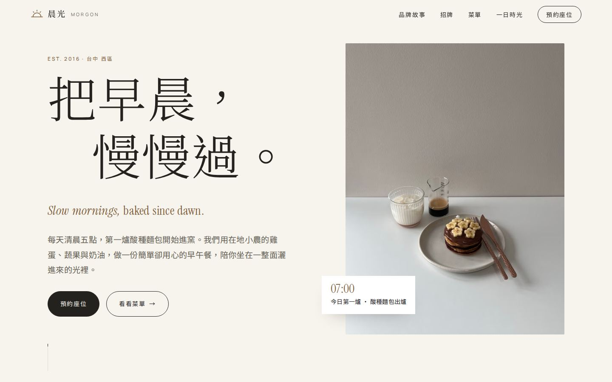
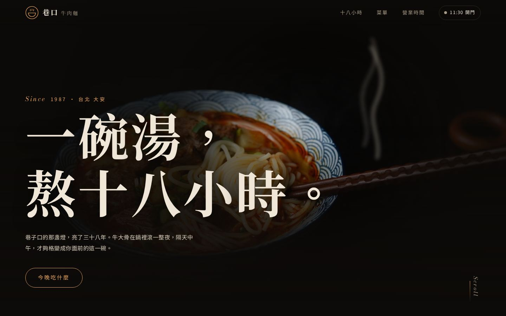
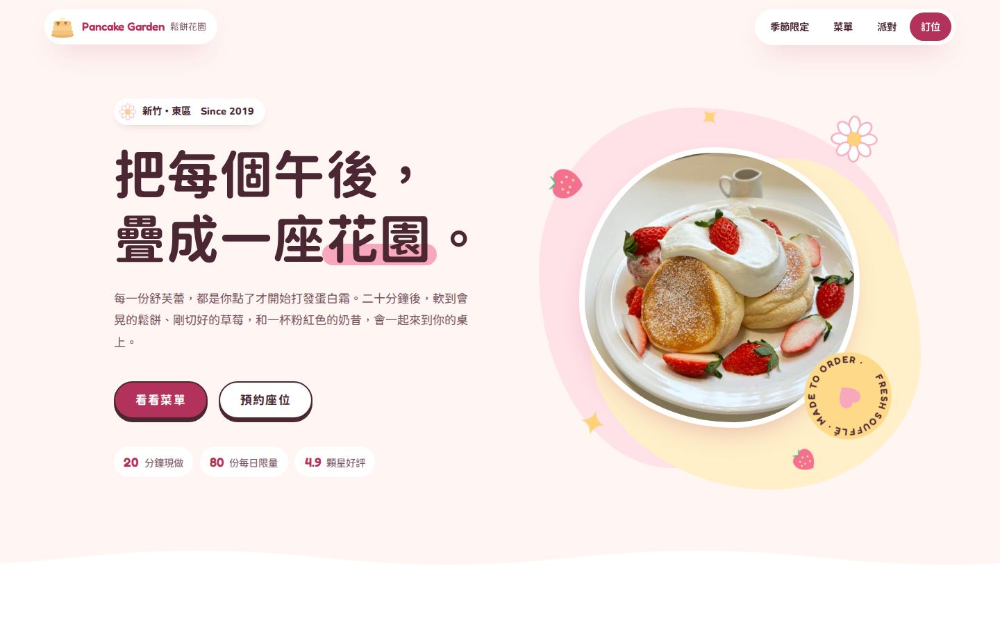
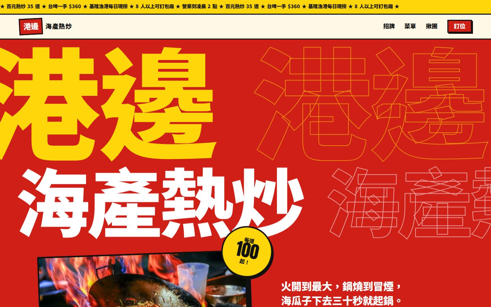
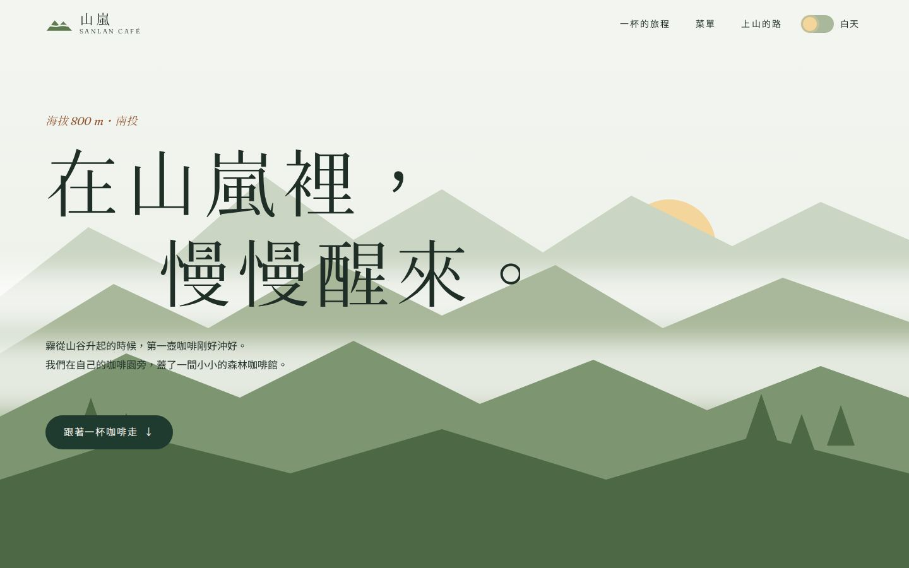
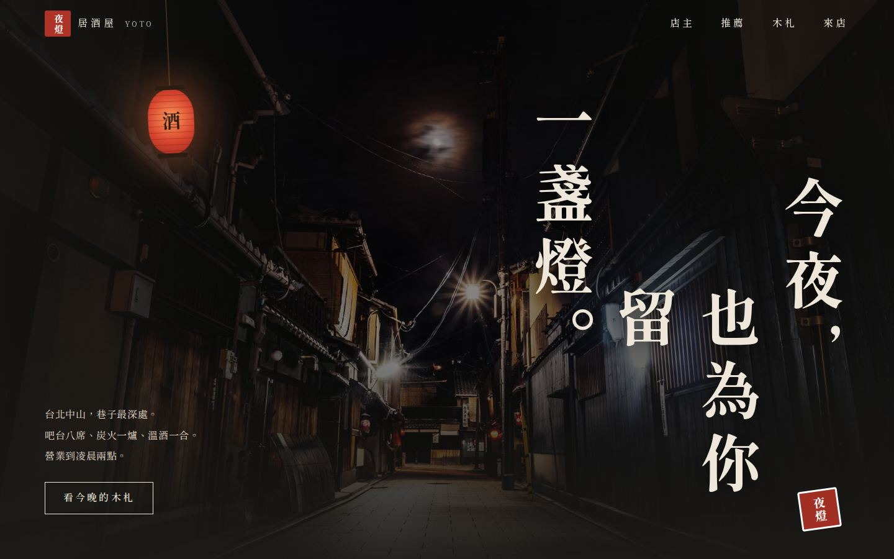
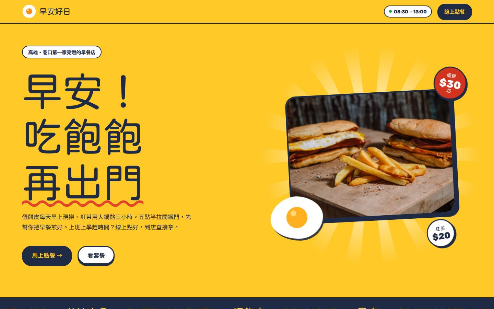
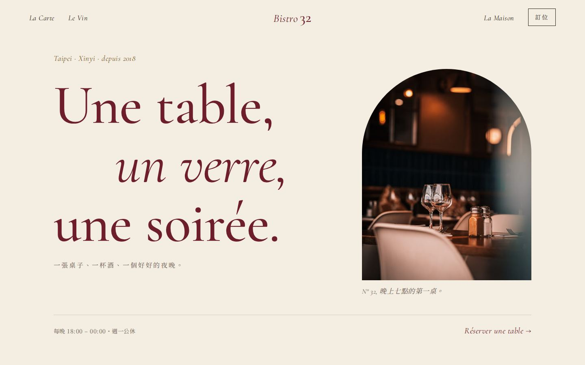
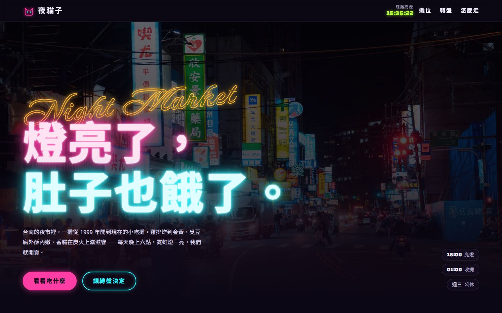

為台灣的店， 做一個會讓人 肚子餓的網站。
從北歐早午餐到霓虹夜市，每一站都有自己的配色、字體、版型與動態。版面跟著那家店的菜和氣氛設計。
所有店名、菜單與地址皆為虛構・照片來自 Pexels
-

01
晨光早午餐
北歐極簡・台中・早午餐
白底、橡木色與大量留白的北歐早午餐，用日出動畫與一整天的光影敘事。
開啟網站 LH 95·100·100·100
-
02
阿嬤的古早味
台式懷舊・台南・台式小吃
紅磚、老招牌燈泡與拍立得的台式懷舊，文楷與手寫字說五十七年的故事。
開啟網站 LH 98·100·100·100
-

03
巷口牛肉麵
深色暖光質感・台北・麵食
黑底配一盞暖燈的牛肉麵老店，滑鼠就是聚光燈，橫向捲完一碗湯的十八小時。
開啟網站 LH 98·100·100·100
-

04
Pancake Garden 鬆餅花園
粉嫩甜美插畫風・新竹・甜點
奶油粉底、大圓角與手繪插畫點綴的舒芙蕾鬆餅店，每個按鈕都像果凍。
開啟網站 LH 93·100·100·100
-

05
港邊海產熱炒
熱鬧大膽海報風・基隆・熱炒
招牌紅、警示黃與粗框粗字的百元熱炒，捲得越快、跑馬燈就跑得越快。
開啟網站 LH 98·100·100·100
-

06
山嵐咖啡輕食
自然森林系・南投・咖啡輕食
分層山景與飄移山霧的森林咖啡館，可以切換成有螢火蟲的夜晚。
開啟網站 LH 98·100·100·100
-

07
夜燈 居酒屋
日式和風深夜食堂・台北・居酒屋
藍染暖簾掀開後，是直書標題、墨跡筆刷與木札牆的深夜居酒屋。
開啟網站 LH 98·100·100·100
-

08
早安好日早餐店
活潑親民黃色系・高雄・早餐店
陽光黃的巷口早餐店，菜單清楚好點，還能線上點餐、選取餐時間。
開啟網站 LH 97·100·100·100
-

09
Bistro 32 小酒館
法式優雅・台北・法式餐酒
米白與酒紅的法式小酒館，義大利體標題、印刷菜單卡與會換酒色的餐酒搭配。
開啟網站 LH 97·100·100·100
-

10
夜貓子小吃攤
霓虹夜市・台南・夜市小吃
深紫黑底上的霓虹燈管，會閃的招牌字、游標尾跡和「今晚吃什麼」轉盤。
開啟網站 LH 96·100·100·100
每一站都照同一套標準做
- 設計系統主色、輔色、強調色、字級與間距全用 CSS 變數管理。
- RWD375、768、1440 三種寬度逐一截圖檢查，沒有水平捲動。
- 動態只動 transform 與 opacity，支援「減少動態」設定。
- 效能行動版 Lighthouse 四項皆 90 分以上，字體按需精簡。